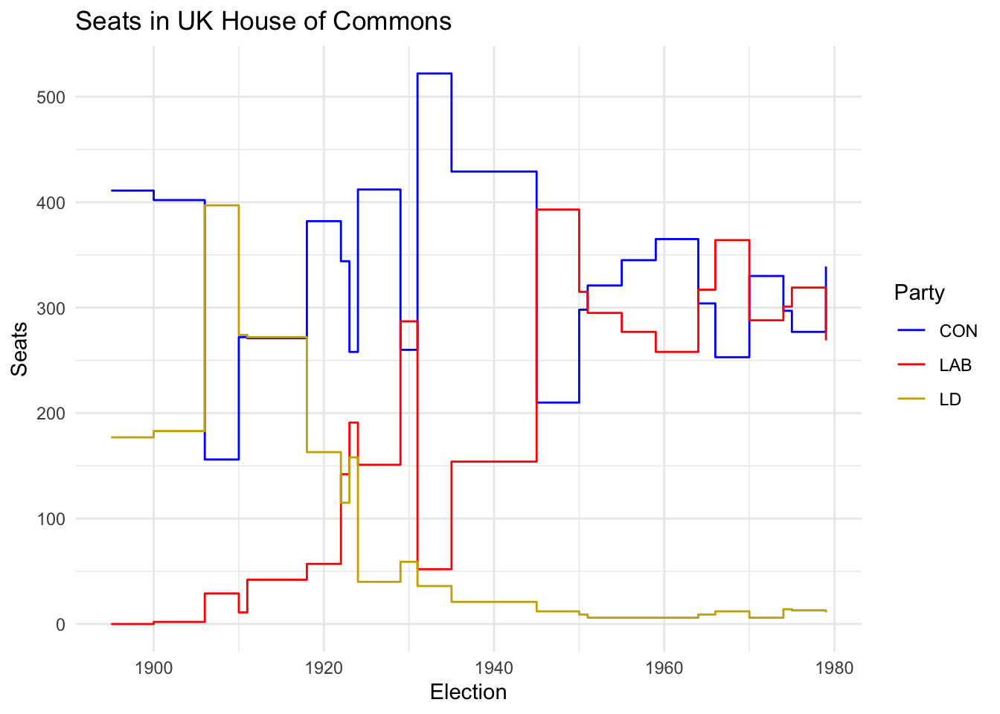

I’m writing a bunch of background notes for the students in the seminar. These are basically things that got cut from the notes for week 1, which were getting out of control. I think everything I say here is true, though I suspect it will seem more than a bit shallow to people who are actually experts in the field. But they seemed like useful things for students to know when reading about this time. The first is on the party system that predominated for most of Keynes’s life in the UK, which featured three main parties.
To understand some of the political debates that Keynes is involved with, it helps to have a sense of the political parties at the time. Great Britain had, for most of Keynes’s life, something like a three party system. I say “Great Britain” here because (a) the same parties were strong in England, Scotland and Wales, but quite different parties were strong in Ireland. But Keynes had next to nothing to say on Irish matters, and I’ll ignore the Irish parties from now on.
From right to left, the three parties were the Conservative, or Tory, Party, the Liberal Party, and the Labour Party. You can get a bit of a sense of their strengths over time from this graph of the number of seats in the House of Commons they had after each election from 1895-1979. (though we’ll come back to why this is potentially misleading in a bit).
As you can see, this was much more of a two-party system when Keynes was younger. I haven’t included them here, but the main Irish party had more members of the House of Commons than Labour for most of the time until Irish independence after WWI. Still, Labour was there, and after WWI became more and more important.
Keynes was by inclination, upbringing, and social class, a Liberal. Indeed he was one of the more prominent Liberal public intellectuals for much of his life. For many of his political projects, convincing his fellow Liberals that he was right was a key part of his strategy. (Though he also often worked by trying to convince technocrats.) I believe he voted Liberal at every election in his life except 1945, when like practically everyone else he voted Labour.
I’ve said that the parties could be arranged right-to-left, and that’s roughly right, but only roughly. The Conservatives were in some ways more religiously tolerant than the Liberals. They were much less anti-Catholic, going back to the two parties views on the Glorious Revolution. And they had a Jewish leader, Disraeli, which it is hard to imagine the Liberals having done. More importantly for our story, one of the big divisions between the parties was on trade. The Liberals were, almost as a matter of identity, pro-free trade, while the Conservatives were more protectionist. I don’t know how free-trade versus protectionism gets coded as left/right these days, but certainly at some times it has been coded as free-trade being the right-wing view here. When Keynes suggested that tariffs might be part of the best response to the Great Depression, this was as large a break from Liberal orthodoxy as he made any time in his life.
Now there is one important sense in which everything I’ve said here was a bit misleading. From 1916 to 1926, the Liberal party was split into two factions, one organised around Asquith (the PM until 1916), and the other around Lloyd George (the PM after 1916). The two factions, although still in some sense part of the same party, contested elections against each other. Keynes was originally on Asquith’s side (because he agreed with Asquith about how to conduct the war, and then importantly about Versailles) but eventually switched to Lloyd George’s side (because of how hostile Asquith was to the general strike).
It’s also worth noting how much tighter the connection between academia and politics was in those days. Asquith, who was PM from 1908-1916, had a post-doc at Oxford. And Arthur Balfour, one of the most important Conservatives of the first two decades of the 20th Century, and for a short time PM himself, was a philosopher. He wrote several articles in Mind, as well as a book critically surveying the popular philosophical views of the late 19th century. His criticisms of idealism anticipate in some respects Moore’s more famous criticisms. And Balfour’s connections to philosophy proved very helpful to philosophers who got themselves into high profile scraps. He couldn’t keep Russell out of prison during WWI, but he did intervene to make sure Russell got particularly lenient treatment.
Keynes seems to have had a real visceral dislike for most Conservatives. See for instance this rather pointed passage from his obituary for Asquith.
His temperament was naturally conservative. With a little stupidity and a few prejudices dashed in he would have been Conservative in the political sense also.
But Keynes’s obituary for Balfour, while somewhat impersonal, is very generous in its intellectual praise, favorably comparing Balfour’s early economic work in the 1890s to that of the more famous economists of the time.